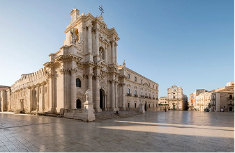
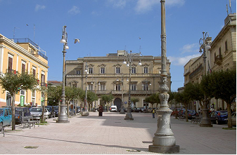
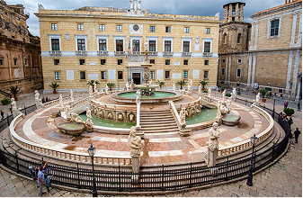
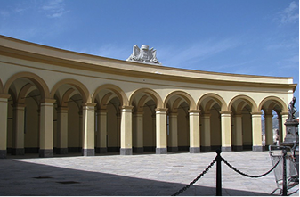

Piazza Duomo
Nel cuore barocco di Ragusa Ibla, laimponente facciata della Cattedrale di San Giorgio.
scopri di più
Ragusa Ibla
Nel cuore barocco di Ragusa Ibla, laimponente facciata della Cattedrale di San Giorgio.
scopri di più
Caltanissetta
Piazza Garibaldi è il cuore storico e religioso di Caltanissetta. Dove si trova la Cattedrale di Santa Maria La Nova.
scopri di più
agrigento
Piazza Pirandello è la piazza principale della città di Agrigento ed è dedicata al celebre scrittore Luigi Pirandello.
scopri di più
Catania
Piazza Duomo dominata dalla Cattedrale di Sant’Agata e dalla Fontana dell’Elefante, racconta la forza della città.
scopri di più
Messina
Piazza Duomo custodisce il maestoso Duomo di Messina e il celebre campanile con l’orologio astronomico.
scopri di più
ortigia (sr)
Piazza Duomo è il cuore monumentale dell’isola di Ortigia, centro storico di Siracusa.
scopri di più
enna
Piazza Vittorio Emanuele è una delle piazze principali di Enna, situata nel cuore del centro urbano.
scopri di più
Palermo
La chiesa di San Domenico ha numerosi caffè storici; importante punto di incontro e mercato storico.
scopri di più
trapani
Piazza Vittorio Emanuele è una grande piazza che collega il centro storico di Trapani alla parte moderna della città.
scopri di più